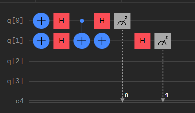
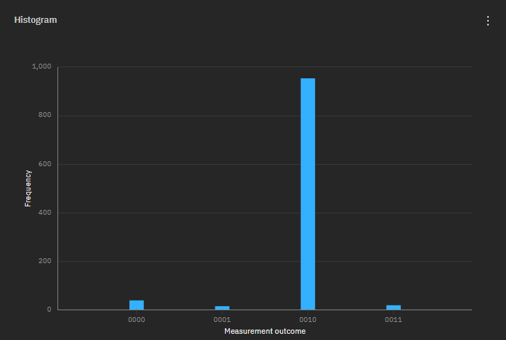

Quantum Computing
Basics
This blog article focuses on the implementation of quantum algorithms. I will only explain the basics a little bit. For more information on those, you can watch the lecture Quantum Computing for Computer Scientists. Quantum Computing uses a concept called the qubit. The qubit represents the concept of a bit being in superposition. The formula for it is $$ | q \rangle = \begin{pmatrix}\alpha\\\beta\end{pmatrix}. $$ $\alpha$ and $\beta$ are complex numbers and are the probabilities of $|q\rangle$ being the bit $0$ and $1$ respectively. Thus, $$ | 0 \rangle = \begin{pmatrix}1\\0\end{pmatrix}, | 1 \rangle = \begin{pmatrix}0\\1\end{pmatrix}. $$ To manipulate these qubits accurately, similar as in Classical Computing, matrices are used. Those matrices will then be multiplied with the qubit to get the result. The four basic operations of Classical Computing are constant-0, constant-1, identy and negation. The following matrices represent them in Quantum Computing. $$ \textbf{0} = \begin{pmatrix}1 & 1\\ 0 & 0\end{pmatrix}, \textbf{1}=\begin{pmatrix}0 & 0\\ 1 & 1\end{pmatrix}, \textbf{I} \begin{pmatrix}1 & 0\\ 0 & 1\end{pmatrix}, \textbf{X} =\begin{pmatrix}0 & 1\\ 1 & 0\end{pmatrix} $$ Another important operation that is unique to Quantum Computing is the Hadamard gate. It puts a $|0\rangle$ or $|1\rangle$ qubit into equal superposition. The bit is then equal as probable to be $|0\rangle$ or $|1\rangle$ when measured. $$ \textbf{H}=\begin{pmatrix}\frac{1}{\sqrt{2}} & \frac{1}{\sqrt{2}}\\ \frac{1}{\sqrt{2}} & -\frac{1}{\sqrt{2}}\end{pmatrix} $$ Until now we have only discussed single qubits but in Classical Computing more bits are needed to represent more numbers. For example $101_2=5_{10}$ In Quantum Computing, they are made with the tensor product. That is defined by $$ | q\otimes p \rangle = | q\rangle \otimes |p \rangle = \begin{pmatrix}\alpha_q\\\beta_q\end{pmatrix}\otimes \begin{pmatrix}\alpha_p\\\beta_p\end{pmatrix} $$ $$ \begin{pmatrix}\alpha_q \begin{pmatrix}\alpha_p\\\beta_p\end{pmatrix} \\\beta_q\begin{pmatrix}\alpha_p\\\beta_p\end{pmatrix}\end{pmatrix} =\begin{pmatrix}\alpha_q \alpha_p\\ \alpha_q\beta_p \\\beta_q\alpha_p\\\beta_q \beta_p\end{pmatrix} $$ For example $$ |01\rangle = \begin{pmatrix}0\\ 1 \\0\\0\end{pmatrix} $$ Another operation that is used on a 2-Qubit-System is the controlled not gate. The first bit is called the control bit and the second one the target bit. If the control bit is $1$, the target bit is flipped. If not, nothing happens. $$ \textbf{CNOT}=\begin{pmatrix} 1 & 0 & 0 & 0\\ 0 & 1 & 0 & 0 \\ 0 & 0 & 0 & 1 \\ 0 & 0 & 1 & 0\end{pmatrix} $$ This matrix is multiplied by a 2-Qubit-System. For example, with $|01\rangle$
Implementations
Random bit generator
Q# is an F#-inspired language that helps simulate quantum algorithms. With this language we are able to code a simple random bit generator. First we will initialize a qubit state $|0\rangle$. Then we will transform that qubit by using the Hadamard gate and multiplying it with the qubit and then measure it to get $|0\rangle$ or $|1\rangle$ with equal probability. This is implemented in the following code.
namespace Qrng {
open Microsoft.Quantum.Convert;
open Microsoft.Quantum.Math;
open Microsoft.Quantum.Measurement;
open Microsoft.Quantum.Canon;
open Microsoft.Quantum.Intrinsic;
operation RandomBit() : Result {
use q = Qubit();
H(q);
return M(q);
}
}
Deutsch Oracle
The Deutsch Oracle is a deterministic quantum algorithm to determine if a function $f: \{0,1\}\rightarrow \{0,1\}$ in a given blackbox is constant or balanced. It outputs $|01\rangle$ if the function is balanced and $|11\rangle$ if it's constant. I am not going into detail exactly why or how it works, this is done in the talk that I linked to at the beginning. This time I will implement the algorithm not in Q#, but in IBM's Quantum Composer. This will allow me to run the program on an actual quantum computer. This is an example implementation, which checks if the negation operation is balanced. The output of this run on the quantum computer is the following.

Check out my GitHub